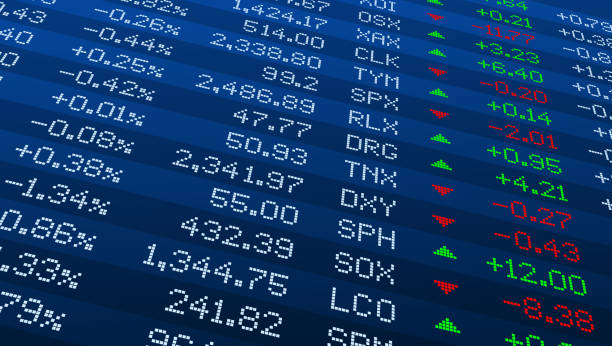

What are Fundamentals in Stock Trading?
Most people think that investing in stocks is just about buying shares of a company and then waiting for the value to go up. While this may be the case for some people, it's not always that simple. To make smart stock investments, you need to understand the fundamentals of stock trading.
If you truly want to be successful at stock trading, you need to know what you're doing. This means understanding the different types of terms, fundamentals, stocks, and so on. Only then can you make wise investment decisions and avoid costly mistakes.
In this article, we will be taking you through some of the basics of stock trading, including what fundamentals are and why they're important. By the end of this article, you should have a better understanding of how to approach stock trading and make more informed decisions.
So, what are the fundamentals of stock trading?
Fundamentals are factors that can affect the price of a security. This could be anything from the financial stability of a company to global political events. To make sound investment decisions, you need to be aware of the different fundamentals that can affect stock prices.
Stock fundamentals show a company's financial health, which includes cash flow, returns on assets (ROA), etc. Fundamental analysis is the process of analyzing a stock based on its fundamental aspects. This involves looking at any data that may influence a stock's price or perceived value.
Most analysts use a combination of fundamental and technical analysis when making investment decisions. Technical analysis looks at things like charts and past price movements to try and predict future price movements. However, some people only use fundamental analysis when making investment decisions.

How do stock fundamentals work?
Stock fundamentals mean different things to different people. However, there are some key fundamental indicators that most people look at when trying to assess a stock.
Fundamental analysis entails examining any data that is anticipated to have an impact on the price or perceived value of a stock. This means anything other than the stock's trading patterns.
Fundamental analysis is the process of analyzing a company by creating a picture of it, identifying the company's fundamental value, and purchasing or selling its shares based on that knowledge.
The following are some examples of indicators that may be used to evaluate a company's fundamentals:
1. Cash flow
Cash Flow is one of the most important aspects of a company's financial health. It is a measure of how much cash is coming in and going out of a company. A positive cash flow means that more cash is coming in than going out, while a negative cash flow indicates the reverse.
In simple words, cash flow is the amount of cash that a company has on hand, minus the amount of debt that it owes. Most investors and traders use cash flow as one of the key indicators when making investment decisions.
2. Returns on assets (ROA)
Returns on assets (ROA) is a measure of how much profit a company generates for each dollar of asset that it owns. Returns on assets or ROA is calculated by dividing a company's net income by its total assets. ROA is considered to be a good indicator of a company's financial health.
For example, if a company has a ROA of 20%, it means that for every dollar of asset that the company owns, it generates 20 cents in profit. The bigger the ROA, the better.
3. Conservative gearing
Gearing is a measure of a company's debt-to-equity ratio. A company with a high gearing ratio is more leveraged (has more debt) than a company with a low gearing ratio.
Gearing ratios are used to assess a company's financial health and its ability to pay off its debts. A high gearing ratio indicates that a company is riskier and is more likely to default on its debts.
4. History of profit
Another important factor to consider is a company's history of profit. This is a good indicator of a company's overall financial health and its ability to generate profits in the future. A company that has consistently reported profits is usually a safer investment than a company that has not.
Most investors mainly focus on a company's current and past profit margins when making investment decisions. Profit margin is a measure of how much profit a company generates for each dollar of revenue.
5. The effectiveness of capital management
Capital management is the process of managing a company's capital (its money) to generate the highest return possible. It involves making decisions about how to invest the company's money and how much money to keep in cash.
An effective capital management strategy can help a company to maximize its profits and minimize its risks. This also shows that the company is responsible for its finances.
So these are some of the most common indicators that investors use to assess a company's fundamentals. There are many other indicators as well, but these are the most important ones.
More technical fundamentals in stock trading
When looking at a company's fundamentals, it is important to remember that no single indicator is perfect. Each indicator has its strengths and weaknesses. The best way to make investment decisions is to use a combination of indicators to get the most accurate picture possible.
Here are some technical indicators that are often used by investors:
1. Earnings Per Share (EPS)
When you divide a company's net profit by the number of common outstanding shares, you will get the Earnings Per Share or EPS. EPS is a calculation that shows how much money a company makes for each share of its stock. This number is used to figure out how valuable a company is.
The earnings per share, or EPS, is the most basic way for traders and investors to determine whether a stock is undervalued or overvalued. If investors believe a company's shares are worth more than its current market price because of expected future profits, the EPS will be higher.
Earnings per share (EPS) is one of the most important financial indicators since it can be used to compare a company's performance against that of its competitors in the same industry.
2. Price to Earnings Ratio (P/E)
The price-to-earnings (P/E) ratio calculates how much investors are willing to pay today for a stock's past or future earnings. A high P/E might indicate that a company's price is inflated relative to earnings, and it may even be considered overvalued.
A low P/E, on the other hand, might signify that the current stock price is undervalued about earnings. The P/E ratio is a metric that measures the market value of a company by comparing current share prices to earnings per share (EPS).
P/E ratios are used by investors and analysts to compare the value of one company's shares to another company's shares. It may also be used to compare a firm against its history or the aggregate market against one another, as well as over time.
3. Price to earnings ratio to growth ratio (PEG)
The PEG ratio is a valuation metric that measures the relationship between a stock's price-to-earnings (P/E) ratio and its earnings growth rate. It is calculated by dividing a stock's P/E ratio by its earnings growth rate.
Similar to a P/E, A low PEG ratio means that a stock is undervalued relative to earnings growth. A high PEG ratio, on the other hand, might signify that a company's price is overvalued about earnings growth.
The PEG for a given company can vary a lot depending on which growth estimate is used. Different sources might use different estimates, like one-year or three-year projected growth.
4. Price to book value ratio (P/B)
The price-to-book ratio (P/B ratio) is a way to compare how much a company is worth on the stock market with how much the company is worth in total. This number is calculated by dividing the stock price per share by the book value per share.
The book value of an asset is the amount that it is worth on the company's balance sheet. This is calculated by netting the asset against its accumulated depreciation. The book value of a company is the total value of its assets minus the value of any intangible assets and liabilities.
The initial outlay of an investment is what you paid for it. The book value is what the investment is worth after subtracting the costs of trading it, such as sales taxes and service charges. Some people call this ratio the price-equity ratio.
5. Dividend Payout Ratio (DPR)
The dividend payout ratio (DPR) is a metric that shows how much of a company's earnings are paid out in dividends to shareholders. This number is calculated by dividing the total amount of dividends paid out by the company in a given year by its net income.
The DPR can be used to compare different companies' dividend policies, as well as to compare a company's dividend payout over time. It can also be used as a tool to help investors decide whether a stock is a good investment.
A high DPR might indicate that a company is paying out too much of its earnings in dividends, and it might not have enough money left over to reinvest in its business or pay off debt. A low DPR might signify that a company is not paying out enough in dividends, and it might be hoarding its earnings instead of returning them to shareholders.
6. Dividend Yield (DY)
The dividend payout ratio (DPR) is a metric that shows how much of a company's earnings are paid out in dividends to shareholders. This number is calculated by dividing the total amount of dividends paid out by the company in a given year by its net income.
The DPR can be used to compare different companies' dividend policies, as well as to compare a company's dividend payout over time. It can also be used as a tool to help investors decide whether a stock is a good investment.
A high DPR might indicate that a company is paying out too much of its earnings in dividends, and it might not have enough money left over to reinvest in its business or pay off debt. A low DPR might signify that a company is not paying out enough in dividends, and it might be hoarding its earnings instead of returning them to shareholders.

What are the benefits of fundamental analysis?
There are many benefits to fundamental analysis, here are some of the main ones
1. You can make money whether the stock market is going up or down.
One of the key benefits of fundamental analysis is that you can make money whether the stock market is going up or down. If you buy stocks when they're low and sell them when they're high, you'll make a profit. But if you do the reverse—buy when stocks are high and sell when they're low—you'll still make money, just not as much.
2. You can get a clear idea of a company's true value
When it comes to stock trading, understanding the intrinsic value of a company is crucial to making smart investment decisions. By analyzing a company's financial statements, you can get a clear idea of its true value and make informed investment choices. If you see that a company is undervalued, you can buy its stock and sell it when the market realizes its true value.
3. You can make more informed investment decisions
The fundamental analysis gives you a clear picture of a company's financial health, which allows you to make more informed investment choices. If you're considering investing in a company, you can use fundamental analysis to determine whether or not the company is a good investment.
4. You can find hidden gems
Fundamental analysis can help you find hidden gems—companies that are undervalued by the market but have strong fundamentals. By analyzing a company's financial statements, you can identify these hidden gems and make profitable investments.
5. You can avoid losses
Another benefit of fundamental analysis is that it can help you avoid losses. If you see that a company is overvalued and has weak fundamentals, you can avoid investing in it and losing money. However, there will still be risks associated with any investments you make, but you can minimize these risks by doing your research and using fundamental analysis.
Conclusion
Fundamental analysis is a crucial tool for all investors as it allows you to make informed investment decisions, find hidden gems, and avoid losses. If you're new to investing, it's important to learn how to do the fundamental analysis so that you can make the most of your investments. It might take you a while to learn how to do it correctly, but it will be worth it in the long run. Thanks for reading!